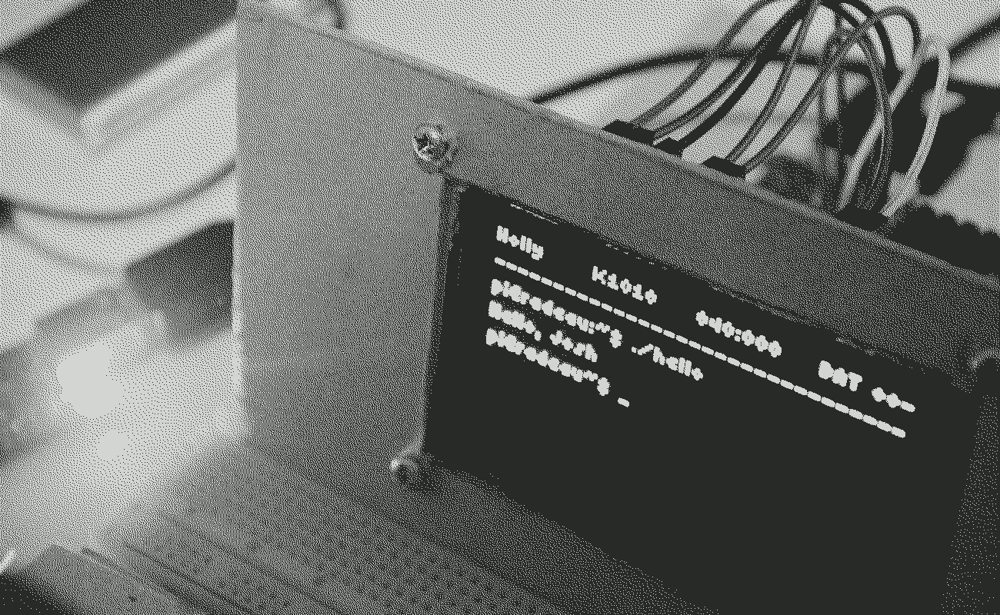
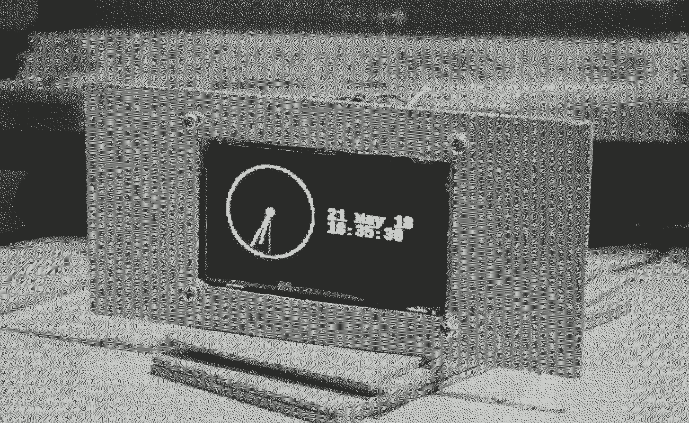

Holly is a computer console built with a Raspberry Pi Zero W, features a 2.7-inch monochrome OLED display, and is powered by a 2700mAh lithium ion battery.
The project is put on hold as I messed up the soldering of the battery circuit. In the meantime, the Pi is being used in another project.
H0818–Y0618 · 75 logs · 32.76 h · 24.29 PY · 3.95 VI · 3.14 RE · 0.89 DV · 0.49 MN